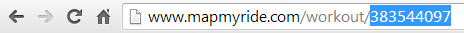

Simply input the ID of your workout, and we'll convert it into a GPX file that you can import into Strava, TrainingPeaks, or other services.
We preserve your additional metrics such as cadence and heart rate.
How To Use:
Open MapMyRide and select your workout.
Select and Copy the workout ID in the URL: 
Paste the ID into the textbox above, and we'll convert it for you!